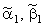
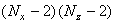
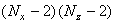

|
6.2. Характеристика второй подсхемы.
Вторая подсхема (9.8) схемы расщепления, являясь аналогом неявной разностной схемы
для одномерного дифференциального уравнения параболического типа, обладает всеми свойствами последней: она
абсолютно устойчива, решается с помощью метода прогонки.
Приведём подсхему (9.8) к виду (4.10), удобному для использования метода прогонки:
Следовательно, коэффициенты, соответствующие уравнению (4.10), имеют вид:
Легко видеть, что для второй подсхемы (9.8) схемы расщепления достаточное условие сходимости прогонки (4.16) выполняется:
Рекуррентное прогоночное соотношение для второй подсхемы (9.8) имеет вид:
Прогоночные коэффициенты определяются согласно соотношениям (4.13):
Для определения значений прогоночных коэффициентов на 1-м шаге, т.е. ,
и решения на правой границе используются граничные условия по координате y. Методики определения,
а также последовательность вычислений (метод прогонки) аналогичны описанным ранее. Отличие состоит лишь в том,
что соотношения (9.12) и (9.13) включают переменные j и m, поэтому необходимо задать внешние циклы
по этим переменным:
следовательно, при решении второй подсхемы (9.8) (т.е. на второй трети интервала  t)
метод прогонки будет использован  раза. t)
метод прогонки будет использован  раза.
Результатом решения второй подсхемы (9.8) схемы расщепления являются значения
функции u на шаге по времени (n + 2/3), необходимые для решения третьей подсхемы (9.9). Однако следует
отметить, что (как и в случае результата решения первой подсхемы (9.7)) оценка погрешности значений
функции u на шаге по времени (n + 2/3) не представляется возможной, так как аппроксимация схемой расщепления
(9.7)-(9.9) исходного дифференциального уравнения (9.1) достигается только в результате последовательного
решения всех трёх подсхем. Поэтому близость к истинным значениям может быть гарантирована только для
значений функции u на (n + 1)-ом шаге по времени.
|